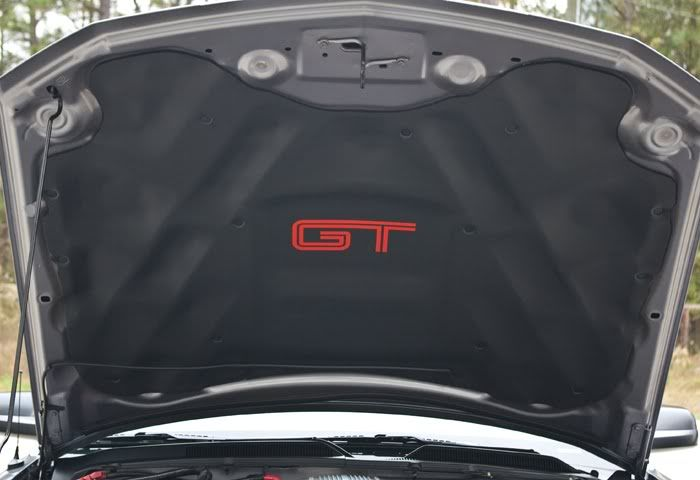
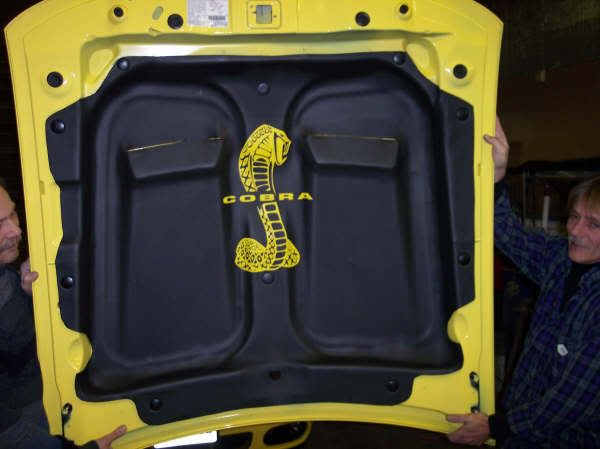
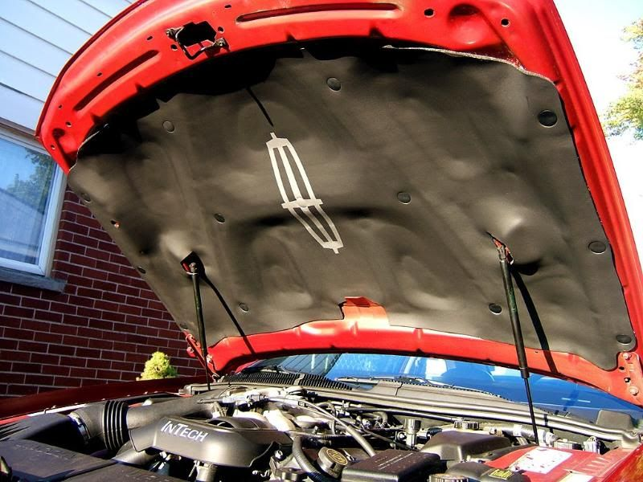
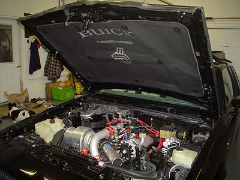
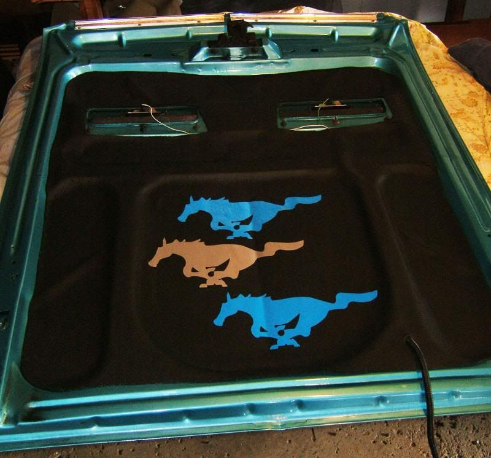
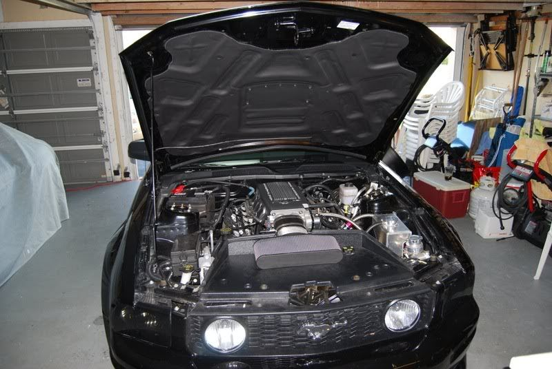
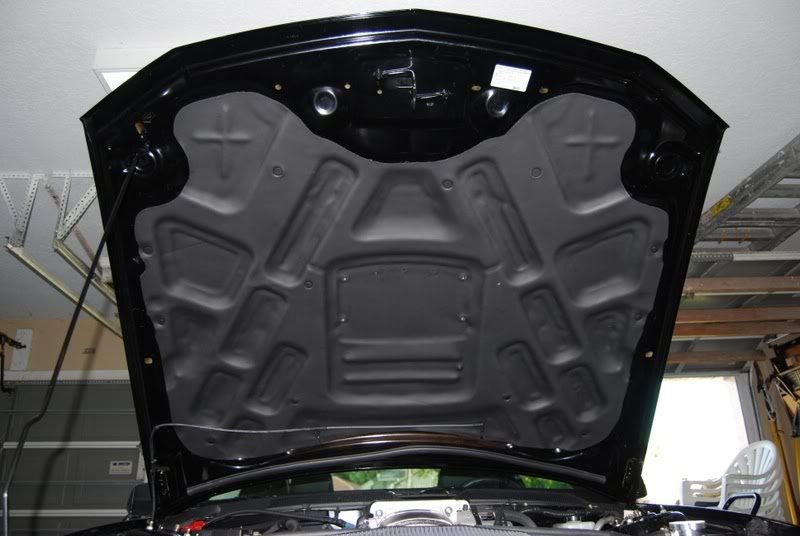
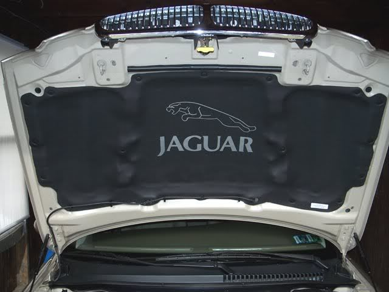

-
There's a guy in Westland,MI (about 20 miles west of Detroit) that can make a hood liner that will fit the Z31. He needs a hood or a stencil made with the factory hood liner. Let me know so I can PM you the info. He can also do a group buy if there's enough interest.
It's a 1/4" thick and needs to be glued in place with a spray adhesive. Custom decals can also be added.
Really nice looking hood liner for about $100.
Or I can order one (not made for the Z) and cut it to fit if he can't get a stencil of the OEM hood liner .
Some pics of the hood liners







Shiro #443

-
Re: Anybody near Westland,MI Custom Hood Liner (pics)
Nobody? :-(Shiro #443
-
Re: Anybody near Westland,MI Custom Hood Liner (pics)
I just read this. I don't have a spare hood, but I know where one of my old ones are that I can borrow for this project. Shoot me the info. I drive through westland everyday to get to work. Shiro Special # 981 Being assembled in my spare time Chromoly acquired!
Shiro Special # 981 Being assembled in my spare time Chromoly acquired!
Originally posted by BoostedMamma -
Re: Anybody near Westland,MI Custom Hood Liner (pics)
if it turns into a group buy, im interested…
-
Re: Anybody near Westland,MI Custom Hood Liner (pics)
They look great and all but I can't really justify spending 100 bucks on one when the money could be better spent on different parts.
"Beer is proof that god wants us to be happy" - Benjamin Franklin -
Re: Anybody near Westland,MI Custom Hood Liner (pics)
Racinjitter's gonna talk to him soon to get the ball rolling.
Here's some Z's I thought would look nice in the center of the hood liner. It's an extra $15 I think. He can do em in a few different colors. I think Silver,white,red,blue,orange and maybe some others.
I personally like the first one.
Shiro #443
-
Re: Anybody near Westland,MI Custom Hood Liner (pics)
middle def, closest to the Z31 "Z" which is only proper.Rick88ss wrote: Racinjitter's gonna talk to him soon to get the ball rolling.
Here's some Z's I thought would look nice in the center of the hood liner. It's an extra $15 I think. He can do em in a few different colors. I think Silver,white,red,blue,orange and maybe some others.
I personally like the first one.
- VG30DET (HE341) 86 300ZX - 1982 280ZX Turbo - Headered NA 1986 300ZX 2+2 - 2000 Xterra - -
Re: Anybody near Westland,MI Custom Hood Liner (pics)
Anybody have a pic of the 2nd Z above but with the 2 legs the same length?
Just like the Z on the nose emblem.Shiro #443
-
Re: Anybody near Westland,MI Custom Hood Liner (pics)
a logo is only as good as it's relation to size and placement.
just sayin. not that i know anything about logos or that kind of stuff. :hum -
Re: Anybody near Westland,MI Custom Hood Liner (pics)
btw you'll also want to supply a EPS/Vector version of said logo, or you'll get some shitty results when it's printed from a web-safe jpeg.
just sayin. not that i know anything about logos or that kind of stuff. :hum -
Re: Anybody near Westland,MI Custom Hood Liner (pics)
He needs a jpeg,then he converts it to the proper format for printing the decals.Careless wrote: btw you'll also want to supply a EPS/Vector version of said logo, or you'll get some shitty results when it's printed from a web-safe jpeg.
just sayin. not that i know anything about logos or that kind of stuff. :hum
Take a look at the pics of the hood liners. They look good to me.Shiro #443
-
Re: Anybody near Westland,MI Custom Hood Liner (pics)
hey rick anyone drop off a hood liner yet? since im in the toledo area now i could drive up there take off my hood liner for a bit and let him borrow it if he still needs it. and also interested in a group buy86 NA auto 2+2 with 300k miles, now turbo with 5 speed -
Re: Anybody near Westland,MI Custom Hood Liner (pics)
Me thinks use the z31 z with all the little dash marks around it like on the emblem.
"Beer is proof that god wants us to be happy" - Benjamin Franklin -
Re: Anybody near Westland,MI Custom Hood Liner (pics)
Those Z pix are just some examples. I'm sure you can get any style Z or decal you want.khyronzx wrote: Me thinks use the z31 z with all the little dash marks around it like on the emblem.
In a week or two we'll have all the details (price,decal choices,time frame,etc).
If anybody has any other decal ideas just post the jpeg image here.Shiro #443
-
Re: Anybody near Westland,MI Custom Hood Liner (pics)
I just thought of something since my Z is an 88. Do the 84-86 Z's have the same underhood support bracing and use the same hood liner?Shiro #443

Copyright © 2006–. All rights reserved. Privacy Policy